| Biochemistry aims to explain biological
form and function in chemical terms. One of the most
fruitful approaches to understanding biological phenomena
has been to purify an individual chemical component, such
as a protein, from a living organism and to characterize
its chemical structure or catalytic activity. As we begin
the study of biomolecules and their interactions, some
basic questions deserve attention. What chemical elements
are found in cells? What kinds of molecules are present
in living matter? In what proportions do they occur? How
did they come to be there? In what ways are the kinds of
molecules found in living cells especially suited to
their roles? We review here some of the chemical principles that govern the properties of biological molecules: the covalent bonding of carbon with itself and with other elements, the functional groups that occur in common biological molecules, the three-dimensional structure and stereochemistry of carbon compounds, and the common classes of chemical reactions that occur in living organisms. Next, we discuss the monomeric units and the contribution of entropy to the free-energy changes of reactions in which these units are polymerized to form macromolecules. Finally, we consider the origin of the monomeric units from simple compounds in the earth's atmosphere during prebiological timesthat is, chemical evolution. |
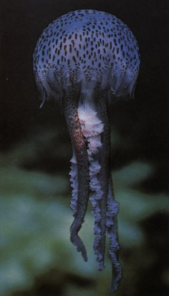 The chemical composition of living material, such as this jellyfish, difiers from that of its physical environment, which for this organism is salt water. |
By the beginning of the nineteenth century, it had become clear to chemists that the composition of living matter is strikingly different from that of the inanimate world. Antoine Lavoisier (1743-1794) noted the relative chemical simplicity of the "mineral world," and contrasted it with the complexity of the "plant and animal worlds"; the latter, he knew, were composed of compounds rich in the elements carbon, oxygen, nitrogen, and phosphorus. The development of organic chemistry preceded, and provided invaluable insights for, the development of biochemistry.
We will briefly review some fundamental concepts of organic chemistry: the nature of bonding between atoms of carbon and of hydrogen, oxygen, and nitrogen; the functional groups that result from these combinations; and the diversity of organic compounds that are derived from these elements.
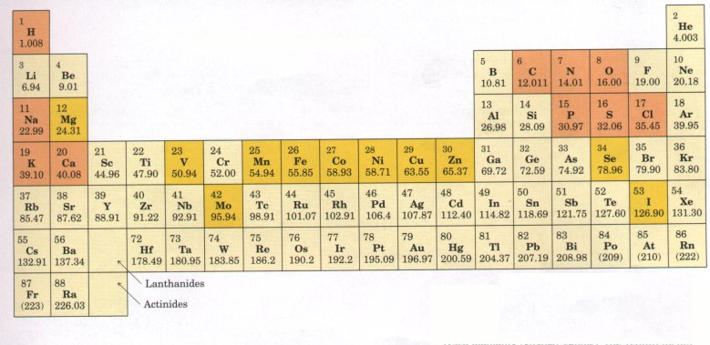
Figure 3-1 Elements essential to animal life and health. Bulk elements (shaded orange) are structural components of cells and tissues and are required in the diet in gram quantities daily. For trace elements (shaded yellow), the requirements are much smaller: for humans, a few milligrams per day of Fe, Cu, and Zn, even less of the others. The elemental requirements for plants and microorganisms are very similar to those shown here.
Only about 30 of the more than 90 naturally occurring chemical elements are essential to living organisms. Most of the elements in living matter have relatively low atomic numbers; only five have atomic numbers above that of selenium, 34 (Fig. 3-1). The four most abundant elements in living organisms, in terms of the percentage of the total number of atoms, are hydrogen, oxygen, nitrogen, and carbon, which together make up over 99% of the mass of most cells. They are the lightest elements capable of forming one, two, three, and four bonds, respectively (Fig. 3-2). In general, the lightest elements form the strongest bonds. Six of the eight most abundant elements in the human body are also among the nine most abundant elements in seawater (Table 3-1), and several of the elements abundant in humans are components of the atmosphere and were probably present in the atmosphere before the appearance of life on earth. Primitive seawater was most likely the liquid medium in which living organisms first arose, and the primitive atmosphere was probably a source of methane, ammonia, water, and hydrogen, the starting materials for the evolution of life. The trace elements (Fig. 3-1) represent a miniscule fraction of the weight of the human body, but all are absolutely essential to life, usually because they are essential to the function of specific enzymes (Table 3-2). |
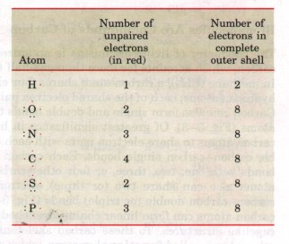 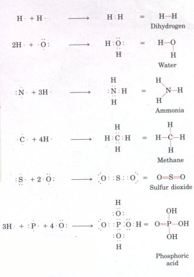 Figure 3-2 Covalent bonding. 'Itwo atoms with unpaired electrons in their outer shells can form covalent bonds with each other by sharing electron pairs. Atoms participating in covalent bonding tend to fill their outer electron shells. |
| Table 3-l Elemental abundanca\e in seawater , the human body, and the earth's crust* | |||||
| Seawater (%) | Human body (%) | Earth's crust (%) | |||
| H | 66 | H | 63 | O | 47 |
| O | 33 | O | 25.5 | Si | 28 |
| Cl | 0.33 | C | 9.5 | Al | 7.9 |
| Na | 0.28 | N | 1.4 | Fe | 4.5 |
| Mg | 0.033 | Ca | 0.31 | Ca | 3.5 |
| S | 0.017 | P | 0.22 | Na | 2.5 |
| Ca | 0.0062 | Cl | 0.08 | K | 2.5 |
| K | 0.0060 | K | 0.06 | Mg | 2.2 |
| C | 0.0014 | ||||
* Values are given as percentage of total number of atoms.
| Tabls 3-2 The biological functions of some trace elements Element Example of biological function | |
| Fe | Electron carrier in oxidation reduction reactions |
| Cu | Component of mitochondrial oxidase |
| Mn | Cofactor of the enzyme arginase and other enzymes |
| Zn | Cofactor of dehydrogenases |
| Co | Component of vitamin B12 |
| Mo | Component of Nz-fixing enzyme |
| Se | Component of the enzyme glutathione peroxidase |
| V | Cofactor of the enzyme nitrate reductase |
| Ni | Cofactor of the enzyme urease |
| I | Component of thyroid hormone |
| Mg | Cofactor in photosynthesis |
The chemistry of living organisms is organized around the element carbon, which accounts for more than one-half the dry weight of cells. In methane (CH4), a carbon atom shares four electron pairs with four hydrogen atoms; each of the shared electron pairs forms a single bond. Carbon can also form single and double bonds to oxygen and nitrogen atoms (Fig. 3-3). Of greatest signiiicance in biology is the ability of carbon atoms to share electron pairs with each other to form very stable carbon-carbon single bonds. Each carbon atom can form single bonds with one, two, three, or four other carbon atoms. Two carbon atoms also can share two (or three) electron pairs, thus forming carbon-carbon double (or triple) bonds (Fig. 3-3). Covalently linked carbon atoms can form linear chains, branched chains, and cyclic and cagelike structures. To these carbon skeletons are added groups of other atoms, called functional groups, which confer specific chemical properties on the molecule. Molecules containing covalently bonded carbon backbones are called organic compounds; they occur in an almost limitless variety. Most biomolecules are organic compounds; we can therefore infer that the bonding versatility of carbon was a major factor in the selection of carbon compounds for the molecular machinery of cells during the origin and evolution of living organisms. |
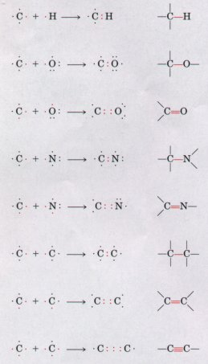 Figure 3-3 Versatility of carbon in forming covalent single, double, and triple bonds (in red), particularly between carbon atoms. triple bonds occur only rarely in biomolecules. |
| The four covalent single bonds that can be formed by a carbon atom are arranged tetrahedrally, with an angle of about 109.5°between any two bonds (Fig. 3-4) and an average length of 0.154 nm. There is free rotation around each carbon-carbon single bond unless very large or highly charged groups are attached to both carbon atoms, in which case rotation may be restricted. A carbon-carbon double bond is shorter (about 0.134 nm long) and rigid and allows little rotation about its axis. (Fig. 3-4). No other chemical element can form molecules of such widely different sizes and shapes or with such a variety of functional groups. | 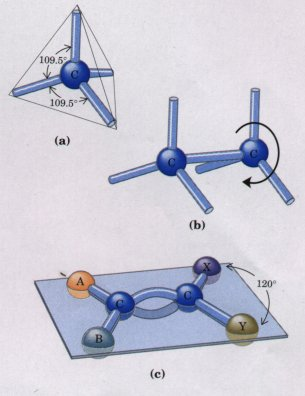 Figure 3-4 (a) Carbon atoms have a characteristic tetrahedral arrangement of their four single bonds, which are about 0.154 nm long and at an angle of 109.5°to each other. (b) Carbon-carbon single bonds have freedom of rotation, shown for the compound ethane (CH3-CH3). (c) Carbon-carbon double bonds are shorter and do not allow free rotation. The single bonds on each doubly bonded carbon make an angle of 120°with each other. The two doubly bonded carbons and the atoms designated A, B, X, and Y all lie in the same rigid plane. |
Most biomolecules can be regarded as derivatives of hydrocarbons, compounds with a covalently linked carbon backbone to which only hydrogen atoms are bonded. The backbones of hydrocarbons are very stable. The hydrogen atoms may be replaced by a variety of functional groups to yield different families of organic compounds. Typical families of organic compounds are the alcohols, which have one or more hydroxyl groups; amines, which have amino groups; aldehydes and ketones, which have carbonyl groups; and carboxylic acids, which have carboxyl groups (Fig. 3-5).
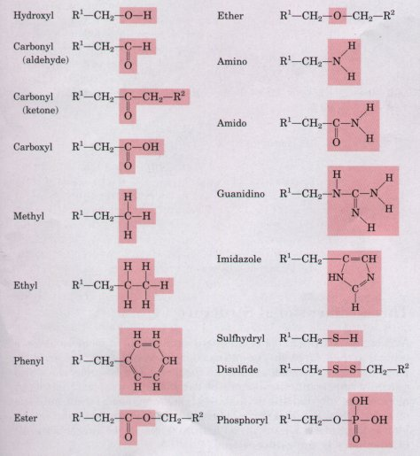
Figure 3-5 Some functional groups frequently encountered in biomolecules. All groups are shown in their uncharged (un-ionized) form.
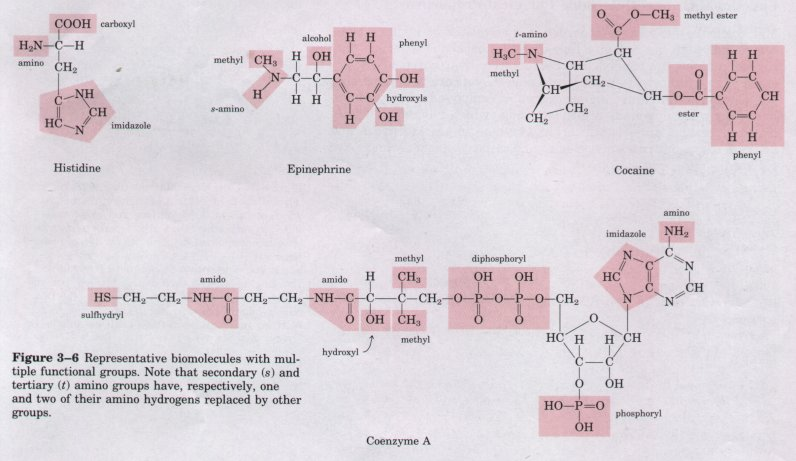
Many biomolecules are poiyfunctional, containing two or more different kinds of functional groups (Fig. 3-6), each with its own chemical characteristics and reactions. Amino acids, an important family of molecules that serve primarily as monomeric subunits of proteins, contain at least two different kinds of functional groups: an amino group and a carboxyl group, as shown for histidine in Figure 3-6. The ability of an amino acid to condense (see Fig. 3-14e) with other amino acids to form proteins is dependent on the chemical properties of these two functional groups.
Although the covalent bonds and functional groups of biomolecules are central to their function, they do not tell the whole story. The arrangement in three-dimensional space of the atoms of a biomolecule is also crucially important. Compounds of carbon can often exist in two or more chemically indistinguishable three-dimensional forms, only one of which is biologically active. This specificity for one particular molecular configuration is a universal feature of biological interactions. All biochemistry is three-dimensional.
Biomolecules have characteristic sizes and three-dimensional structures, which derive from their backbone structures and their substituent functional groups. Figure 3-7 shows three ways to illustrate the three-dimensional structures of molecules. The perspective diagram specifies unambiguously the three-dimensional structure (stereochemistry) of a compound. Bond angles and center-to-center bond lengths are best represented with ball-and-stick models, whereas the outer contours of molecules are better represented by space-filling models. In space-filling models, the radius of each atom is proportional to its van der Waals radius (Table 3-3),and the contours of the molecule represent the outer limits of the region from which atoms of other molecules are excluded. |
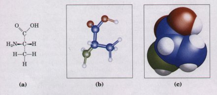 Figure 3-7 Models of the structure of the amino acid alanine. (a) Structural formula in perspective form. The symbol - represents a bond in which the atom at the wide end projects out of the plane of the paper, toward the reader; dashea represent a bond extending behind the plane of the paper. (b) Ball-and-stick model, showing relative bond lengths and the bond angles. The balls indicate the approximate size of the atomic nuclei. (c) Spacefilling model, in which each atom is shown having its correct van der Waals radius (see Table 3-3). |
|
* The van der Waals radius is about twice the covalent radius for each element. The distance between nuclei in a van der Waals interaction or a covalent bond is about equal to the sum of the values for the two atoms. Thus the length of a carboncarbon single bond is about 0.077 + 0.077 = 0.154 nm. |
||||||||||||||||||||||||||||||||||||
The three-dimensional conformation of biomolecules is of the utmost importance in their interactions; for example, in the binding of a substrate (reactant) to the catalytic site of an enzyme (Fig. 3-8), the two molecules must fit each other closely, in a complementary fashion, for biological function. Such complementarity also is required in the binding of a hormone molecule to its receptor on a cell surface, or in the recognition of an antigen by a specific antibody. |
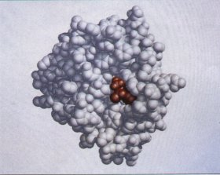 Figure 3-8 Complementary fit of a substrate molecule to the active or catalytic site on an enzyme molecule. The enzyme shown here is chymotrypsin, an enzyme that acts in the intestine to degrade dietary protein. Its substrate (shown in red) fits into a groove at the active site of the enzmne. |
The study of the three-dimensional structure of biomolecules with precise physical methods is an important part of modern research on cell structure and biochemical function. The most informative method is x-ray crystallography. If a compound can be crystallized, the diffraction of x rays by the crystals can be used to determine with great precision the position of every atom in the molecule relative to every other atom. The structures of most small biomolecules (those with less than about 50 atoms), and of many larger molecules such as proteins, have been deduced by this means. X-ray crystallography yields a static picture of the molecule within the confines of the crystal. However, biomolecules almost never exist within cells as crystals; rather, they are dissolved in the cytosol or associated with some other component(s) of the cell. Molecules have more freedom of intramolecular motion in solution than in a crystal. In large molecules such as proteins, the small variations allowed in the three-dimensional structures of their monomeric subunits add up to extensive flexibility. Techniques such as nuclear magnetic resonance (NMR) spectroscopy complement x-ray crystallography by providing information about the three-dimensional structure of biomolecules in solution. Knowledge of the detailed threedimensional structure of a molecule often sheds light on the mechanisms of the reactions in which the molecule participates.
The tetrahedral arrangement of single bonds around a carbon atom confers on some organic compounds another property of great importance in biology. When four different atoms or functional groups are bonded to a carbon atom in an organic molecule, the carbon atom is said to be asymmetric; it can exist in two different isomeric forms (stereoisomers) that have different configurations in space. A special class of stereoisomers, called enantiomers, are nonsuperimposable mirror images of each other (Fig. 3-9). The two enantiomers of a compound have identical chemical properties, but differ in a characteristic physical property, the ability to rotate the plane of plane-polarized light. A solution of one enantiomer rotates the plane of such light to the right, and a solution of the other, to the left. Compounds without an asymmetric carbon atom do not rotate the plane of plane-polarized light.
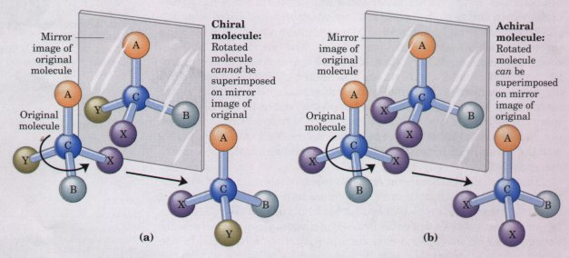
Figure 3-9 Molecular asymmetry: chiral and achiral molecules. (a) When a carbon atom has four difierent substituent groups (A, B, X, Y), they can be arranged in two ways that represent nonsuperimposable mirror images of each other (enantiomers). Such a carbon atom is asymmetric and is called a chiral atom or chiral center. (b) When there are only three dissimilar groups around the carbon atom (i.e., the same group occurs twice), only one configuration in space is possible and the molecule is symmetric, or achiral. In this case the molecule is superimposable on its mirror image: the molecule on the left can be rotated counterclockwise (when looking down its vertical bond from A to C) to create the molecule on the right.
Louis Pasteur, in 1843, was the first to arrive at the correct explanation for this phenomenon of optical activity. Investigating the crystalline material that accumulated in wine casks ("paratartaric acid," also called racemic acid, from Latin racemus, "grape"), he had used a fine forceps to separate two types of crystals identical in shape, but mirror images of each other (Fig. 3-10). Both proved to have all of the chemical properties of tartaric acid, but one type rotated polarized light to the left, the other, to the right, but to the same extent. He later described the experiment and its interpretation: |
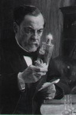 Louis Pasteur 1822-1895 |
In isomeric bodies, the elements and the proportions in which they are combined are the same, only the arrangement of the atoms is different. . . . We know, on the one hand, that the molecular arrangements of the two tartaric acids are asymmetric, and, on the other hand, that these arrangements are absolutely identical, excepting that they exhibit asymmetry in opposite directions. Are the atoms of the dextro acid grouped in the form of a right-handed spiral, or are they placed at the apex of an irregular tetrahedron, or are they disposed according to this or that asymmetric arrangement? We do not know.*
* From Pasteur's lecture to the Societe Chimique de Paris in 1883, quoted in DuBos, R. (1976) Louis Pasteur: Free Lance of Science, p. 95, Charles Scribner's Sons, New York.
| Now we do know. X-ray crystallographic
studies in 1951 confirmed that the levorotatory and
dextrorotatory forms of tartaric acid are mirror images
of each other, and established the absolute configuration
of each (Fig. 3-10>. The same approach has been used
to demonstrate that the amino acid alanine exists in two
enantiomeric forms (Chapter 5). The central carbon atom
of the alanine molecule is bonded to four different
substituent groups: a methyl group, an amino group, a
carboxyl group, and a hydrogen atom. The two
stereoisomers of alanine are nonsuperimposable mirror
images of each other, and thus are enantiomers. Compounds with asymmetric carbon atoms can be regarded as occurring in left- and right-handed forms, and are therefore called chiral compounds (Greek chiros, "hand"). Correspondingly, the asymmetric atom or center of chiral compounds is called the chiral atom or chiral center (Fig. 3-9>. All but one of the 20 amino acids have chiral centers; glycine is the exception. More generally, variations in the three-dimensional structure of biomolecules are described in terms of configuration and conformation. These terms are not synonyms. Configuration denotes the spatial arrangement of an organic molecule that is conferred by the presence of either (1) double bonds, around which there is no freedom of rotation, or (2) chiral centers, around which substituent groups are arranged in a specific sequence. The identifying characteristic of configurational isomers is that they cannot be interconverted without breaking one or more covalent bonds. |
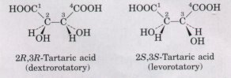 Figure 3-10 Pasteur separated crystals of two stereoisomers of tartaric acid and showed that solutions of the separated forms each rotated polarized light to the same extent but in opposite directions. Pasteur's dextrorotatory and levorotatory forms were later shown to be the R,R and S,S isomers shown here. For compounds with more than one chiral center, the RS system of nomenclature is often more useful than the n and L system described in Chapter 5. In the RS system, each group attached to a chiral carbon is assigned a priorit~~. The priorities of some common substituents are: -OR> -OH > -NH2 > -COOH > -CHO > -CH2OH > -CH3 > -H. The chiral carbon atom is viewed with the group of lowest priority pointing away from the viewer. If the priority of the other three groups decreases in counterclockwise order, the configuration is S; if in clockwise order, R. In this way each chiral carbon is designated as either R or S, and the inclusion of these designations in the name of the compound provides an unambiguous description of the stereochemistry at each chiral center. |
Figure 3-11a shows the configurations of maleic acid, which occurs in some plants, and its isomer fumaric acid, an intermediate in sugar metabolism. These compounds are geometric or cis-trans isomers; they differ in the arrangement of their substituent groups with respect to the nonrotating double bond. Maleic acid is the cis isomer and fumari~ acid the trans isomer; each is a well-defined compound that can be isolated and purified. These two compounds are stereoisomers but not enantiomers; they are not mirror images of each other.
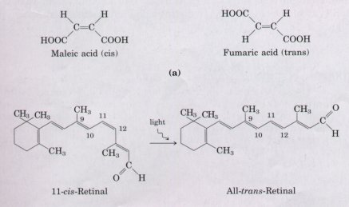 |
Figure 3-11 Configurations of stereoisomers. (a) Isomers such as maleic acid and fumaric acid cannot be interconverted without breaking covalent bonds, which requires the input of much energy. (b) In the vertebrate retina, the initial event in light detection is the absorption of' visible light by 11-cis-retinal. The energy of the absorbed light (about 250 kJ/mol) converts 11-cis-retinal to alltrans-retinal, triggering electrical changes in the retinal cell that lead to a nerve impulse. |
Molecular conformation refers to the spatial arrangement of substituent groups that are free to assume different positions in space, without breaking any bonds, because of the freedom of bond rotation. In the simple hydrocarbon ethane, for example, there is nearly complete freedom of rotation around the carbon-carbon single bond. Many different, interconvertible conformations of the ethane molecule are therefore possible, depending upon the degree of rotation (Fig. 3-12). Two conformations are of special interest: the staggered conformation, which is more stable than all others and thus predominates, and the eclipsed form, which is least stable. It is not possible to isolate either of these conformational forms, because they are freely interconvertible and in equilibrium with each other. However, when one or more of the hydrogen atoms on each carbon is replaced by a functional group that is either very large or electrically charged, freedom of rotation around the carbon-carbon single bond is hindered. This limits the number of stable conformations of the ethane derivative. |
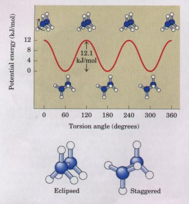 Figure 3-12 Many conformations of ethane are possible because of freedom of rotation around the carbon-carbon single bond. When the front carbon atom (as viewed by the reader) and its three attached hydrogens are rotated relative to the rear carbon atom, the potential energy of the molecule rises in the fully eclipsed conformation (torsion angle 0° 120° etc.), then falls in the fully staggered conformation (torsion angle 60° 180° etc.). The energy differences are small enough to allow rapid interconversion of the two forms (millions of times per second), thus the eclipsed and staggered forms cannot be isolated separately. |